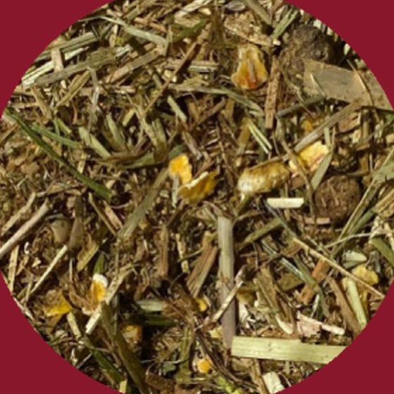
FiberFEED
Mangimi completi fibrosi: un unico alimento bilanciato, dal pre-svezzamento alla lattazione all’ingrasso.


Mangimi fibrosi, completi e complementari prodotti ad Arborea con materie prime selezionate e tracciabili. Il catalogo è ordinato per specie: bovini, ovini e caprini, equini, più la linea biologica, gli insilati e le materie prime.
Cinque linee di mangime più gli insilati e le materie prime. Ogni linea copre una fase precisa dell’allevamento.

Mangimi completi fibrosi: un unico alimento bilanciato, dal pre-svezzamento alla lattazione all’ingrasso.
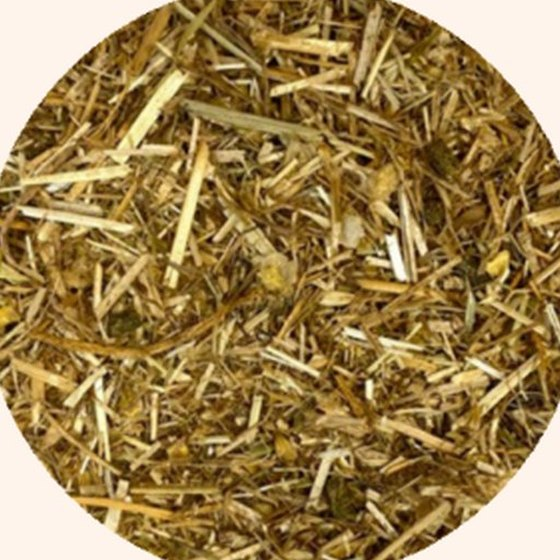
Mangimi complementari fibrosi per i momenti critici: pre-parto, asciutta, preparazione all’accoppiamento.
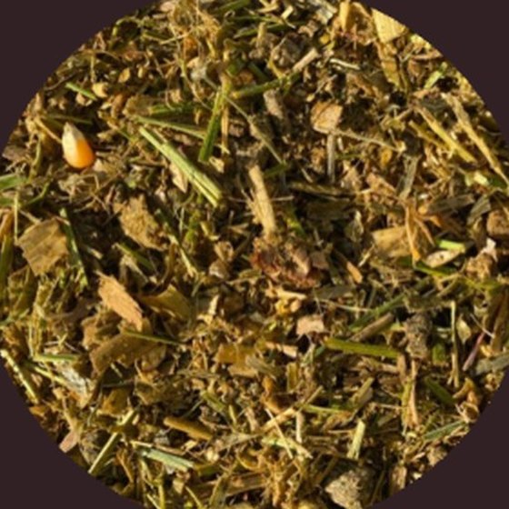
Mangimi complementari fibrosi umidi a base di silo mais, in alternativa al FiberFEED.
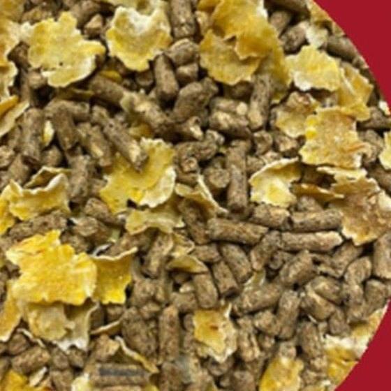
Mangimi complementari in pellet, in sacchetti da 25 kg, per bovini, ovini, caprini ed equini.
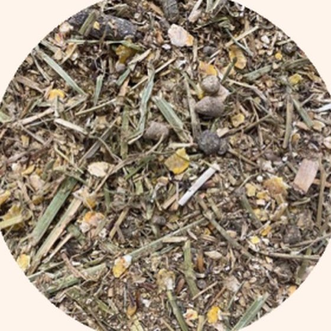
Tre mangimi complementari fibrosi per cavalli, dal lavoro leggero all’endurance.
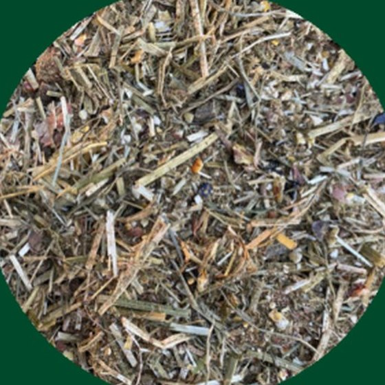
La linea biologica per ovini, caprini e bovini, in big bag da 500 kg.
Bovini
Otto formulazioni che accompagnano l’animale dai primi giorni di vita fino al finissaggio, più sette pellet complementari.
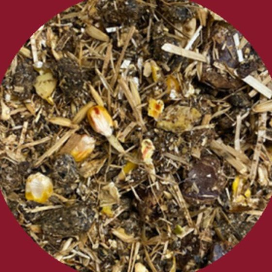
FiberFEED Baby VitelliMangime completo per bovini in fase di pre-svezzamento da 2 a 60 giorniQuesto mangime è appositamente studiato per la fase neonatale dei vitelli/e; esso rappresenta la prima razione solida che l’animale assume a complemento del latte. Il prodotto va messo a disposizione degli animali dai primi 2 giorni di vita fino ai (indicativamente) 60 giorni di età; dovrà essere assunto in quantità crescenti e si consiglia, quando l’ingestione arriva ai 0,8–1 kg, di sostituirlo progressivamente con prodotto per fase successiva. Eventuali aggiunte o diversi impieghi vanno contemplate dopo aver consultato il tecnico alimentarista. Conservare in luogo fresco e asciutto al riparo da agenti contaminanti ed inquinanti. Tenere la confezione al riparo dalla radiazione solare diretta.
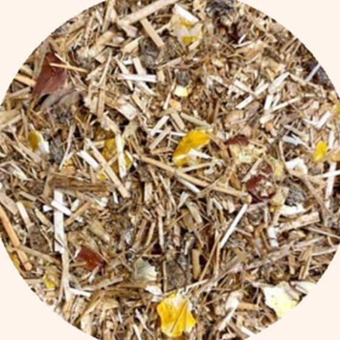
FiberFEED MiniMangime completo per ruminanti di piccola taglia in età giovanile dai 60 a 180 giorniIl prodotto può essere messo a disposizione a volontà degli animali; si consiglia un utilizzo frazionato in 2 o più somministrazioni, lasciando sempre a disposizione acqua pulita. Facoltativamente potrà essere reso disponibile fieno di ottima qualità; eventuali altre addizioni vanno concordate con il tecnico nutrizionista qualificato.
Somministrare a volontà lasciando a disposizione acqua pulita e fresca. Indicativamente dai 22 ai 27 kg/capo se gli animali sono chiusi in stalla, 10 kg a capo/giorno se sono al brado. È consigliabile somministrare il prodotto in maniera che alle 24 ore sia presente in mangiatoia un avanzo non eccedente il 3% della quantità totale distribuita, che va comunque rimossa prima della nuova somministrazione.
Studiato per l’alimentazione delle vacche da latte nella fase di preparazione al parto: utilizzare a partire dai 15–20 giorni precedenti il parto in una quota massima del 75% della razione giornaliera, da integrare con foraggi di ottima qualità. Indicativamente somministrare dai 10 ai 15 kg/capo. Assicurare sempre l’accesso ad acqua pulita. Il prodotto contiene sali anionici.
Utilizzare questo prodotto solo a seguito di indicazione del tecnico nutrizionista.
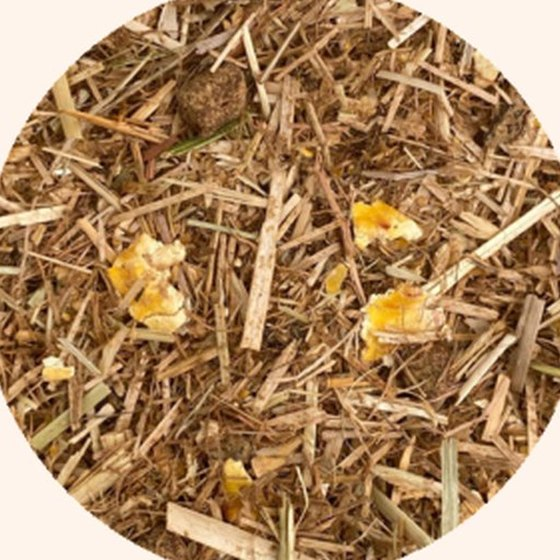
FiberFEED IngrassoMangime completo fibroso per bovini da carne all’ingrassoConsigliato dai 60 giorni di vita fino a circa 1–2 mesi dal macello. Dose giornaliera dai 5 ai 10 kg/capo a seconda della razza e dell’età dell’animale. Può essere somministrato in mangiatoia a libera disposizione. Lasciare sempre a disposizione acqua pulita; può essere integrato, a giudizio del tecnico alimentarista, con fieno o paglia a volontà.
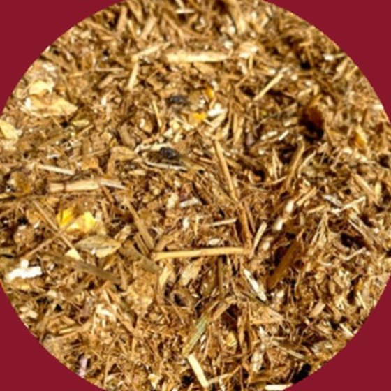
FiberFEED FinissaggioMangime completo fibroso per bovini da ingrasso in fase di finissaggioIniziare la somministrazione 1–2 mesi prima della macellazione. Dose giornaliera dagli 8 ai 12 kg/capo a seconda della razza. Può essere somministrato in mangiatoia a libera disposizione e può essere integrato, a giudizio del tecnico, con fieno o paglia. Lasciare sempre a disposizione acqua pulita.
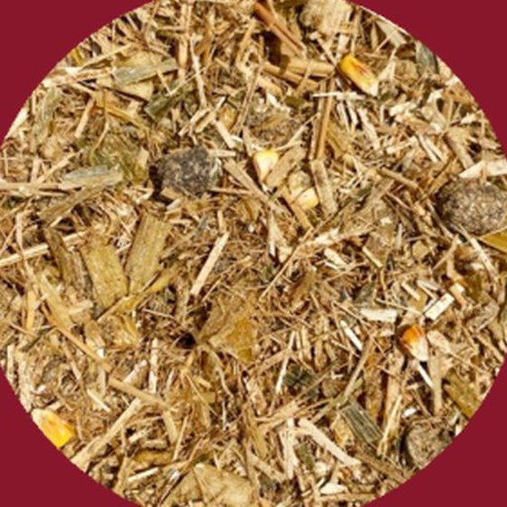
HumiFEED AsciuttaMangime complementare fibroso umido per vacche in asciutta e mantenimentoMangime studiato per l’alimentazione unifeed di bovini in fase di asciutta o mantenimento. Può comporre fino all’80% della sostanza secca totale della razione giornaliera; implementare la restante parte con fieni e/o concentrati fino al corretto bilanciamento. Prodotto ad alto tasso di umidità, soggetto a ripresa dell’attività biologica se esposto all’aria per un tempo prolungato. Il prodotto da confezione integra ha una durata di 4 mesi; una volta aperta, va consumato entro le 24 ore.
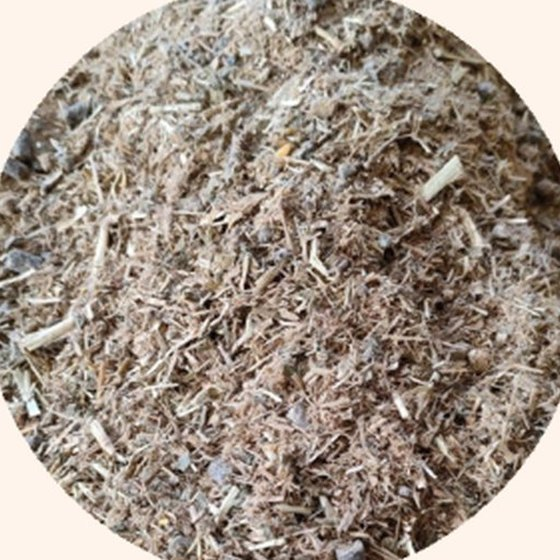
HumiFEED BovingrassoMangime completo per bovini da ingrassoUtilizzabile in mangiatoia a libera disposizione degli animali anche in quantità che possono eccedere il consumo giornaliero previsto. La confezione è sigillata ermeticamente: verificarne sempre la perfetta integrità prima dell’impiego. Il contenuto della confezione deve essere consumato entro le 24 ore dalla sua apertura.
Mangimi complementari in pellet, da affiancare alla razione foraggera.
Formati: sacchetti da 25 kg · pedane da 42 sacchetti – 10,5 q.li · rinfusa con ordine minimo 45 q.li.
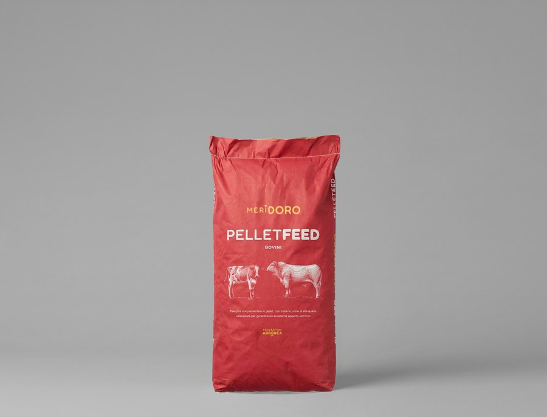
La scelta ideale per i primi giorni di vita: pellet arricchito con fiocchi di mais a vista, somministrabile a volontà già dal 3° giorno. Dal 30° giorno si consiglia integrazione con fieno di graminacee di ottima qualità. Al 17 % di proteina.
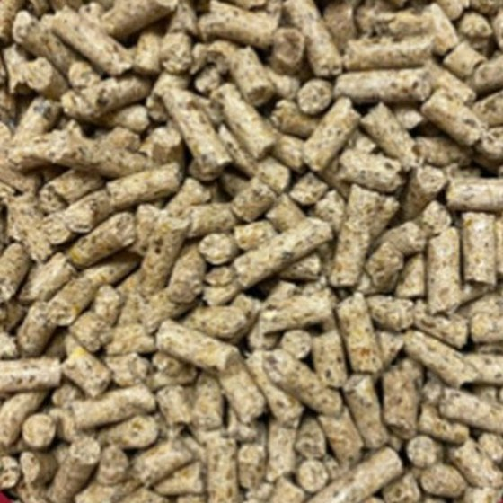
Per chi vuole ottenere il massimo in qualità e resa della carne, in complemento alla razione foraggera nella fase da ingrasso. Arricchito con lieviti e antiossidanti. Al 15 % di proteina. Solo su prenotazione.
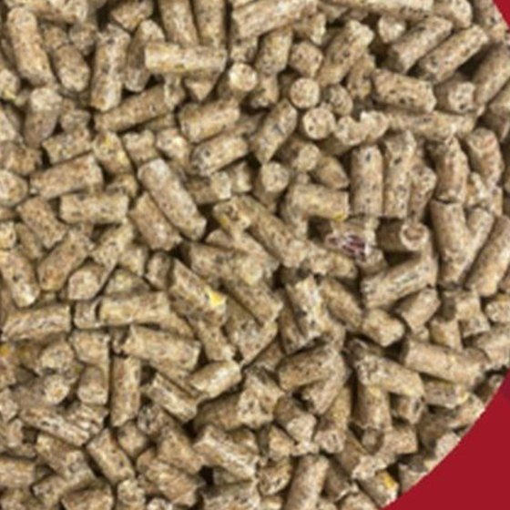
Adatto a vacche da latte, si somministra in ragione di 4,5 kg capo/giorno in aggiunta alla normale razione foraggera. Ideale per chi utilizza catture automatiche. Pellet da lattazione al 16 % di proteine. Solo su prenotazione.
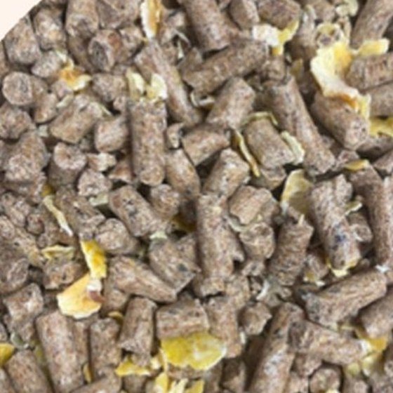
Mangime complementare in pellet, adatto per manze in accrescimento e arricchito con fioccati a vista. Pellet da accrescimento al 20 % di proteina.
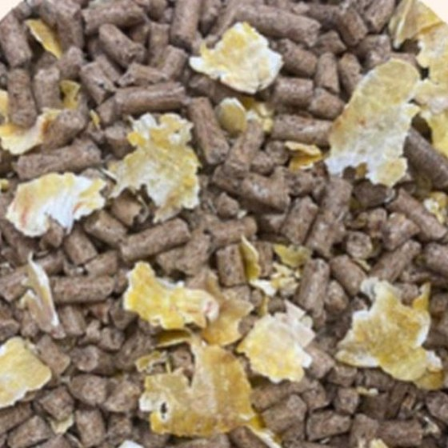
Pellet adatto per manze con fioccati a vista, arricchito con lieviti, antiossidanti e una superiore integrazione specifica rispetto al Manze Fiok. Al 20 % di proteina. Solo su prenotazione.
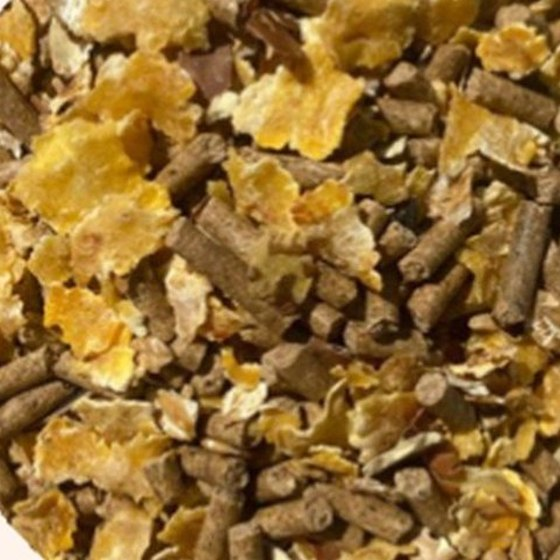
Adattabile nelle fasi di mantenimento, accrescimento e ingrasso. Arricchito con granturco fioccato, fave fioccate e orzo fioccato a vista, al 15,7 % di proteine.
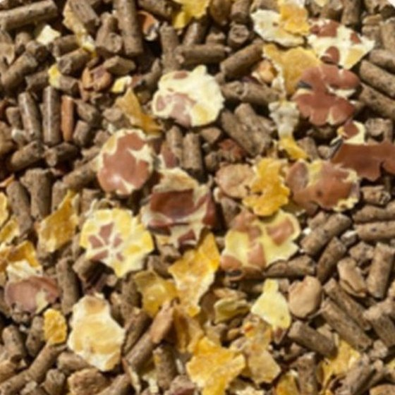
Da somministrare ai bovini da 2 a 4 kg capo/giorno in aggiunta alla normale razione foraggera. Adattabile in lattazione, gestazione avanzata o per animali che necessitano di un apporto proteico elevato. Al 18 % di proteine.
Ovini e caprini
Le formulazioni per pecore e capre seguono la curva di lattazione: qui sotto trovi quale prodotto usare e quando.
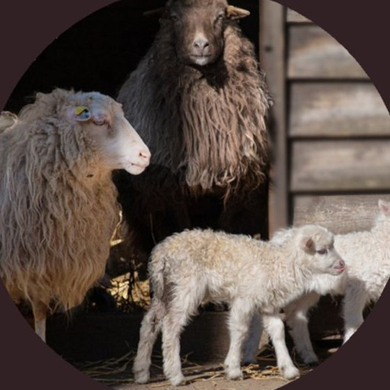
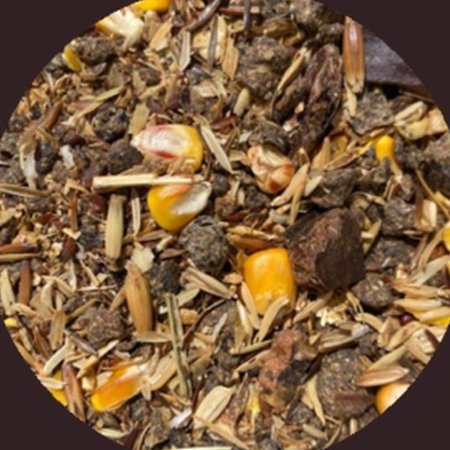
FiberFEED Baby PlusMangime completo per ruminanti in età giovanile in fase di pre-svezzamento da 2 a 30-45 giorniStudiato per la fase neonatale dei ruminanti: rappresenta la prima razione solida che l’animale assume a complemento del latte. Può essere somministrato a disposizione degli animali a partire dalla prima settimana di vita, in quantità crescenti dai 2 ai 30-45 giorni, fino al raggiungimento di un’ingestione pari a 0,8–1 kg. Arrivati a questi limiti si consiglia di sostituirlo progressivamente con un unifeed secco adatto alla seconda fase dello svezzamento.
Può essere messo a disposizione a volontà degli animali dai 30-45 giorni di età fino ai 15-20 giorni prima del parto; si consiglia un utilizzo frazionato in 2 o più somministrazioni, lasciando sempre a disposizione acqua pulita.
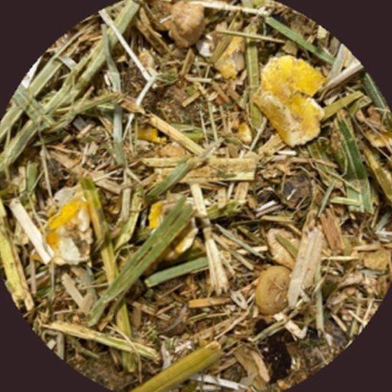
FiberFEED Pecore Prima FaseMangime completo per pecore in lattazioneStudiato per l’alimentazione degli ovini nella prima fase di lattazione (primi 2-3 mesi) o per animali particolarmente produttivi. Somministrare a volontà lasciando sempre a disposizione acqua pulita; è consigliabile che alle 24 ore sia presente in mangiatoia un avanzo non eccedente il 3% della quantità totale distribuita. Quantitativo consigliato intorno ai 2 kg capo/giorno.
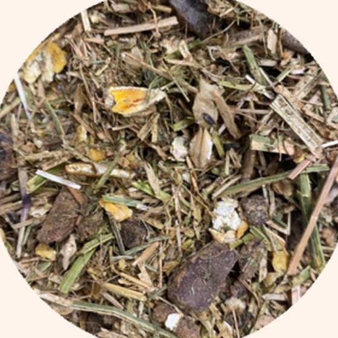
FiberFEED Pecore TopMangime completo per pecore in lattazione di alta geneticaStudiato per esprimere le massime performance produttive in ovini in lattazione in allevamenti di alta genetica. Somministrare a volontà lasciando sempre a disposizione acqua pulita; utilizzo frazionato in 2 o più pasti. Quantitativo consigliato intorno ai 2 kg capo/giorno.
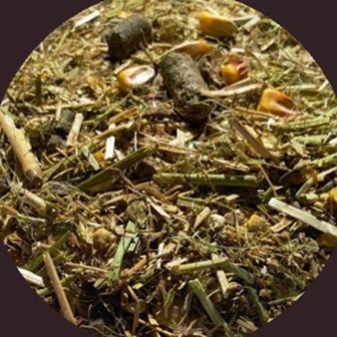
FiberFEED Pecore LattazioneMangime completo per pecore in lattazioneSomministrare a volontà lasciando sempre a disposizione acqua pulita. È consigliabile che alle 24 ore sia presente in mangiatoia un avanzo non eccedente il 3% della quantità totale distribuita, che va comunque rimossa prima della nuova somministrazione. Utilizzo frazionato in 2 o più pasti; quantitativo consigliato intorno ai 2 kg capo/giorno.
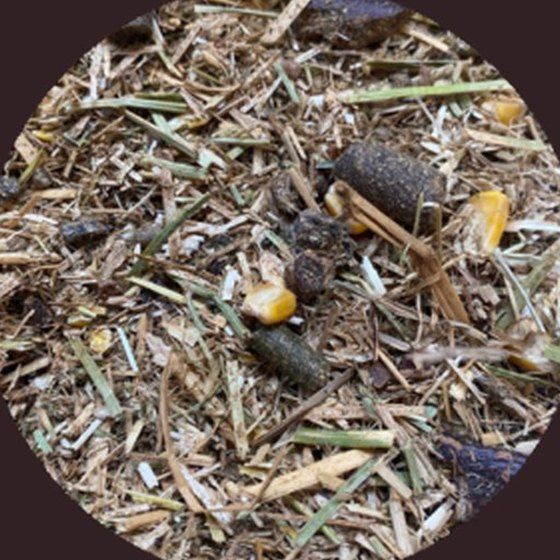
FiberFEED Pecore Seconda FaseMangime completo per pecore in lattazioneSomministrare a volontà lasciando sempre a disposizione acqua pulita, con utilizzo frazionato in 2 o più pasti. Si consiglia di operare secondo le indicazioni del nostro tecnico. Quantitativo consigliato intorno ai 2 kg capo/giorno.
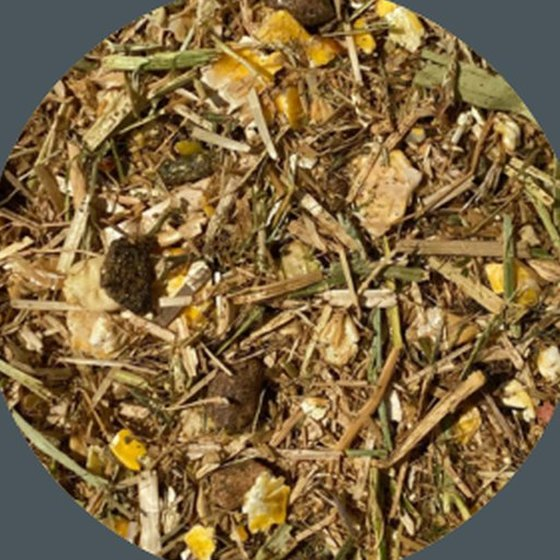
FiberFEED Capre LattazioneMangime completo per capre in lattazioneSomministrare a volontà, lasciandolo sempre a disposizione degli animali. È consigliato l’utilizzo frazionato in 2 o più pasti giornalieri. Il quantitativo varia a seconda della razza dai 2,5 ai 3,5 kg capo/giorno. Consigliamo l’utilizzo a partire da 20 giorni prima del parto.
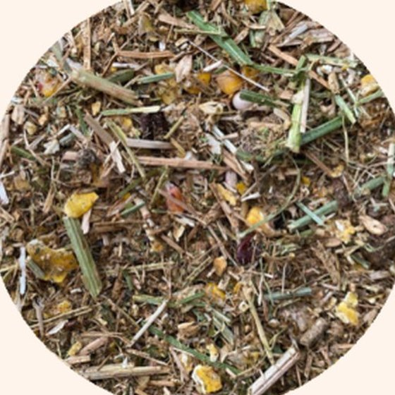
PreUnifeed Ovi-Cap 16PMangime complementare per capre in lattazioneStudiato per l’alimentazione di capre in lattazione, della cui razione giornaliera può costituire fino al 95% della sostanza secca totale. Combinare con concentrati somministrati in cattura fino al corretto bilanciamento della razione. Può essere integrato con fieno o paglia. Si consiglia di operare secondo le indicazioni del tecnico nutrizionista qualificato.
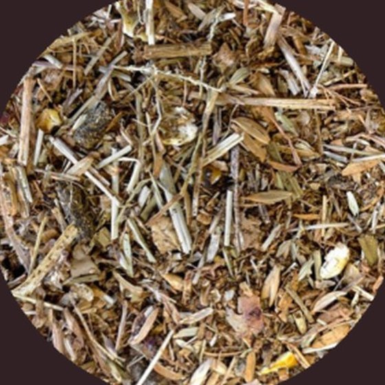
PreUnifeed Calor PlusMangime complementare per ovini in preparazione all’accoppiamentoIniziare la somministrazione ai maschi e alle femmine destinate alla monta con un anticipo di 15-20 giorni rispetto all’introduzione dei maschi nel gruppo. Quantitativo consigliato: arieti e becchi 1,2 kg capo/giorno; saccaie 800 gr capo/giorno, da integrare con il Mini o con scorte aziendali (pascolo, fieni, concentrati); pluripare 1 kg capo/giorno, da integrare con il Pecore Lattazione 500 gr a 1 kg. Proseguire per altri 15-20 giorni dopo l’introduzione dei maschi. Durata minima di utilizzo 30 giorni, massima 60 giorni.
Utilizzare questo prodotto solo a seguito di indicazione del tecnico nutrizionista.
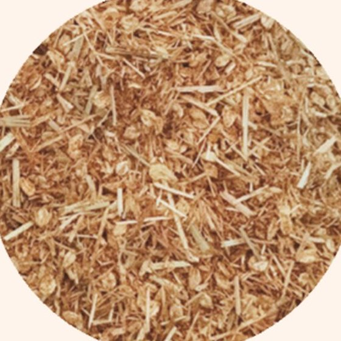
PreUnifeed Pre-PartoMangime complementare per capre in fase di pre-partoFormulato per complementare al meglio la razione in fase di preparto. Da utilizzare a partire dai 15-20 giorni precedenti il parto, accompagnato a fieni di graminacee di ottima qualità o a pascolo. Pecore-capre primipare 0,8 kg/capo/giorno; pecore-capre pluripare 1 kg/capo/giorno. Eventuali utilizzi differenti da quelli indicati devono essere concordati con il nutrizionista aziendale.
Utilizzare questo prodotto solo a seguito di indicazione del tecnico nutrizionista.
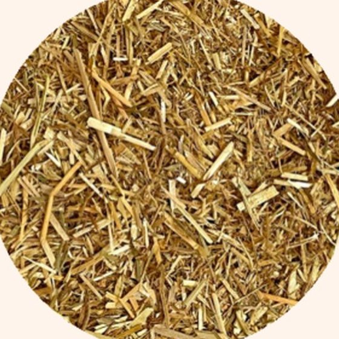
PreUnifeed Ovi-Cap AsciuttaMangime complementare per capre in asciuttaSomministrare fino al 95% della sostanza secca totale in razione. Combinare con concentrati fino al corretto bilanciamento della razione. Il quantitativo consigliato è 1,2–1,5 kg capo/giorno. Periodo di utilizzo consigliato da 2 mesi fino a 15 giorni prima del parto.
Somministrare a volontà, lasciandolo sempre a disposizione degli animali. Il quantitativo consigliato è intorno ai 3 kg capo/giorno; scende a 2,5 kg capo/giorno se si ha a disposizione fieno di buona qualità o pascolo. Può essere integrato in cattura con il PelletFEED a partire da 200 gr capo/giorno. Il prodotto da confezione integra ha una durata di 4 mesi; una volta aperta la confezione va consumato entro le 24 ore.
Formati: sacchetti da 25 kg · pedane da 42 sacchetti – 10,5 q.li · rinfusa con ordine minimo 45 q.li.
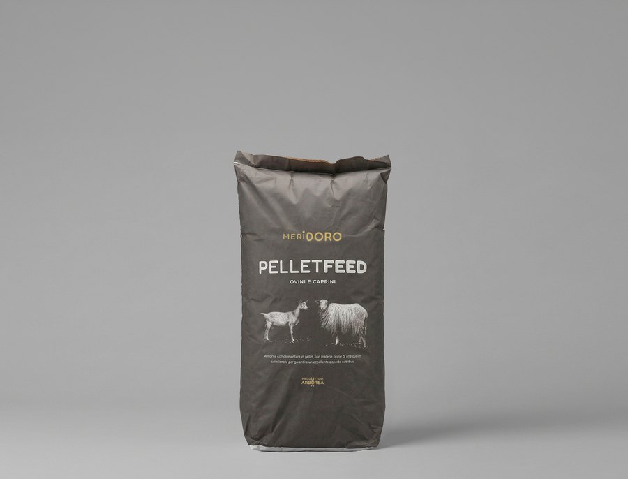
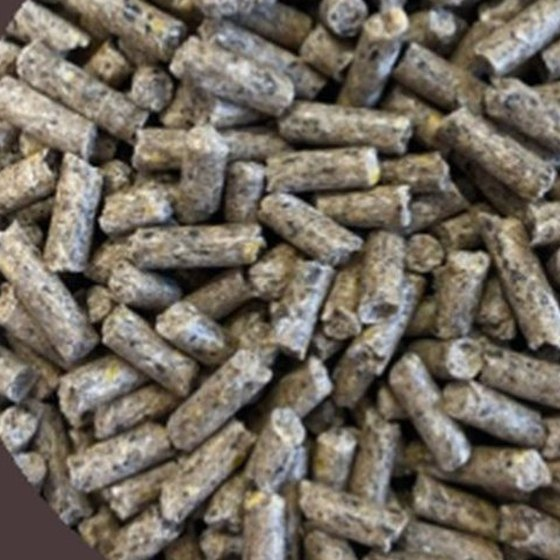
Il più adatto da associare a tutti i nostri FiberFEED da lattazione. Pellet da lattazione al 17,5 % di proteine. Solo su prenotazione, sacchetti; rinfusa non disponibile.
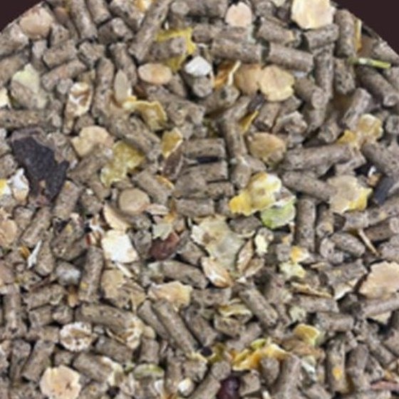
Per chi vuole ottenere il massimo dal proprio allevamento, particolarmente adatto per capre molto produttive e pecore nei primi mesi di lattazione. Arricchito con soia fioccata, granturco fioccato, pisello proteico fioccato, orzo fioccato e carrube. Pellet da lattazione al 17,5 % di proteine.
L’alimentazione è uno dei principali fattori condizionanti lo stato di salute degli animali e la produzione quanti-qualitativa del latte. L’andamento della produzione del latte segue una curva, come quella riportata qui sotto, con una rapida salita fino ad arrivare a un picco (solitamente verso il secondo mese) seguito da una graduale discesa.
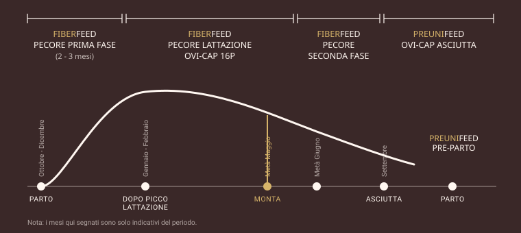
Grafico ripreso dal catalogo Meridoro Ovini. I mesi indicati sono solo indicativi del periodo.
Equini
Mangimi complementari fibrosi da usare come complemento della razione quotidiana di foraggio di buona qualità, in ragione di 0,4–0,8 kg per quintale di peso corporeo a seconda della natura del lavoro svolto.
Somministrare come complemento della razione quotidiana di foraggio di buona qualità in ragione di 0,4–0,8 kg per quintale di peso corporeo, a seconda della natura del lavoro svolto. Si raccomanda l’utilizzo in più somministrazioni (almeno 3 o più) e di assicurare sempre la disponibilità di acqua fresca e pulita e sale bianco (cloruro di sodio) in blocchi o rotoli.
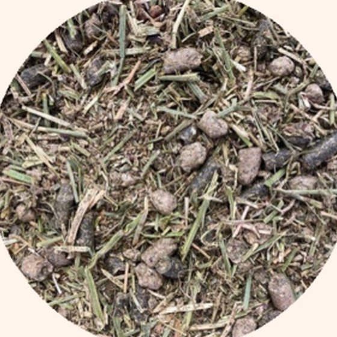
EquinFEED Fat&FiberMangime complementare fibroso per cavalli con problematiche di assimilazione dell’energia da amido e zuccheriCome complemento della razione quotidiana di foraggio di buona qualità in ragione di 0,4–0,8 kg per quintale di peso corporeo, a seconda della natura del lavoro svolto, in almeno 3 somministrazioni. Assicurare sempre acqua fresca e pulita e sale bianco in blocchi o rotoli.
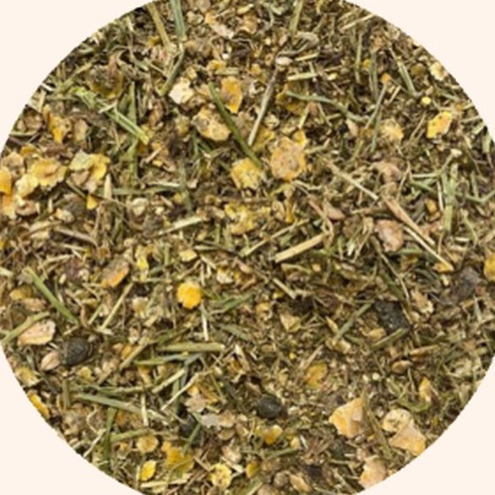
EquinFEED Super EnergyMangime complementare fibroso per cavalli da endurance o in condizioni di lavoro pesanteCome complemento della razione quotidiana di foraggio di buona qualità in ragione di 0,4–0,8 kg per quintale di peso corporeo, a seconda della natura del lavoro svolto, in almeno 3 somministrazioni. Assicurare sempre acqua fresca e pulita e sale bianco in blocchi o rotoli.
Mangimi complementari in pellet adatti per equini.
Formati: sacchetti da 25 kg · pedane da 42 sacchetti – 10,5 q.li.
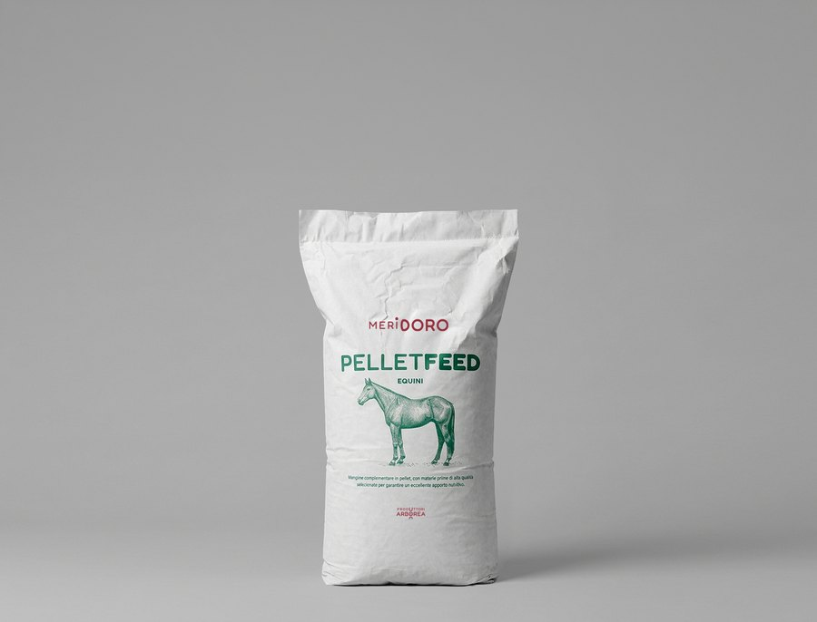
Linea biologica
Il nostro mangime fibroso per animali in regime biologico, per ovini, caprini e bovini. Disponibile in big bag.
Può comporre fino al 95% della sostanza secca totale della razione giornaliera di ovini e caprini; nei bovini fino all’80%. Implementare la restante parte con fieni e/o concentrati fino al corretto bilanciamento. Si consiglia un utilizzo frazionato in 2 o più pasti, secondo le indicazioni del tecnico nutrizionista qualificato.
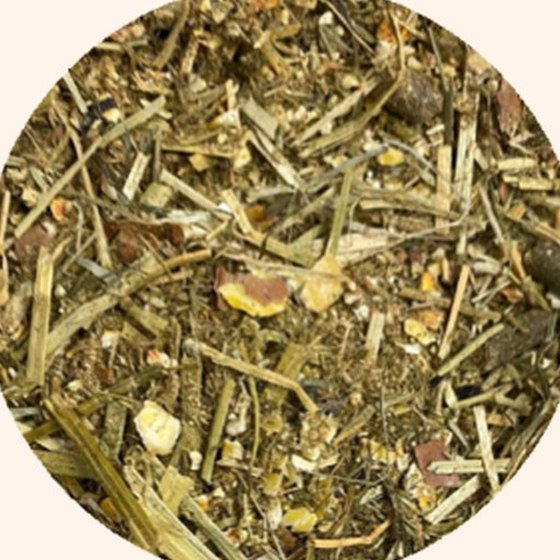
BioFEED AccrescimentoPer ruminanti in età giovanile: agnelli e capretti da 30/45 giorni a 15 giorni prima del parto, vitelli da 60 a 180 giorniIl prodotto può essere messo a disposizione a volontà degli animali; si consiglia un utilizzo frazionato in 2 o più somministrazioni, lasciando sempre a disposizione acqua pulita. Facoltativamente potrà essere reso disponibile fieno di ottima qualità; eventuali altre addizioni vanno concordate con il tecnico nutrizionista qualificato.
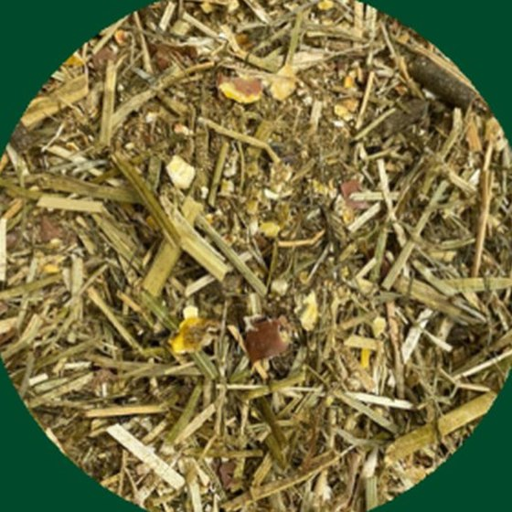
BioFEED MantenimentoMangime complementare fibroso biologico per ovini, caprini e bovini in asciutta/mantenimentoPuò comporre fino al 95% della sostanza secca totale della razione giornaliera di ovini e caprini; nei bovini fino all’80%. Implementare la restante parte con fieni e/o concentrati fino al corretto bilanciamento, con utilizzo frazionato in 2 o più pasti.
Sono disponibili anche miscele di materie prime biologiche, mangimi complementari per ovini, caprini e bovini, in big bag da 6 q.li.
Materie prime per mangimi adatte a tutti i ruminanti, prodotte o selezionate dalla Cooperativa. Disponibili in sacchetti da 25 kg e pedane da 10 q.li.
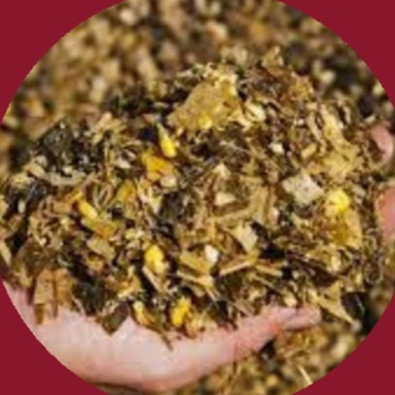
Insilato di granturcoForaggio molto appetibile e dall’alto valore nutritivo, soprattutto per l’apporto energeticoL’insilato di mais, da noi prodotto, deve il suo valore a fibra e amido digeribili, che portano a maggiori produzioni di latte e a una migliore qualità del grasso e della carne. Miscelare accuratamente alle altre componenti della razione secondo le buone pratiche di lavorazione, sotto la guida di un tecnico nutrizionista qualificato. Conservare in luogo fresco ed asciutto, al riparo da agenti contaminanti o inquinanti. La confezione una volta aperta ha una durata di 24 ore.
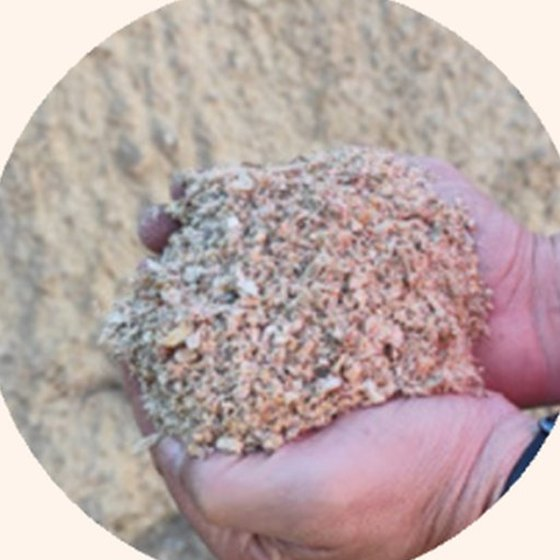
Pastone integrale di granturcoOttenuto dalla triturazione della spiga del mais: digeribilità superiore alla farina di maisMateria prima adatta all’alimentazione dei ruminanti. Miscelare accuratamente alle altre componenti della razione secondo le buone pratiche di lavorazione, operando comunque sotto la guida di un tecnico nutrizionista qualificato. Conservare in luogo fresco ed asciutto ed al riparo da agenti contaminanti inquinanti.
Mangime complementare energetico composto da granturco macinato, orzo macinato, farinaccio, girasole proteico sbriciolato, farina di soia proteica. Proteine 15,00 % · amido 45 %.
Mangime complementare energetico composto da granturco macinato, orzo macinato, farinaccio. Proteine 12,00 % · amido 50 %.
Mangime complementare proteico composto da soia proteica, girasole proteico sbriciolato, distiller, farina di orzo, integrazione vitaminico minerale. Proteine 35,00 %.
Mangime complementare composto da buccette di soia, farinaccio, polpa di barbabietola in pellet, girasole proteico sbriciolato, carrube, medica in pellet, mix di melassi, mais farina, integrazione vitaminico minerale. Proteine 14,10 %.
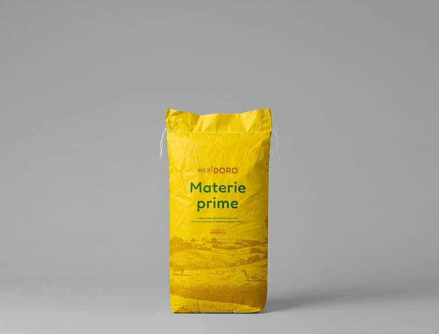
Le nostre materie primeDisponibili anche in sacchetti e big bag* mangimi complementari. Le nostre materie prime sono disponibili anche in sacchetti e big bag.
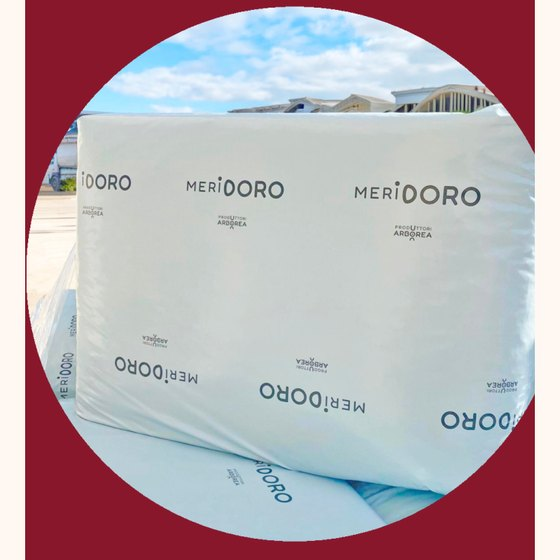
Il nostro melassoM QUALITER, il mangime liquido complementare per tutti i ruminantiSiamo anche rivenditori di M QUALITER, un mangime complementare per tutti i ruminanti composto da melasso di canna, solubili di melasso condensato, melasso di agrumi, melasso di barbabietola, sciroppo di glucosio, malto d’orzo, saccarosio, cloruro di sodio.
Ogni prodotto ha i suoi formati: li trovi nella scheda. Questi sono i confezionamenti con cui il mangimificio consegna.
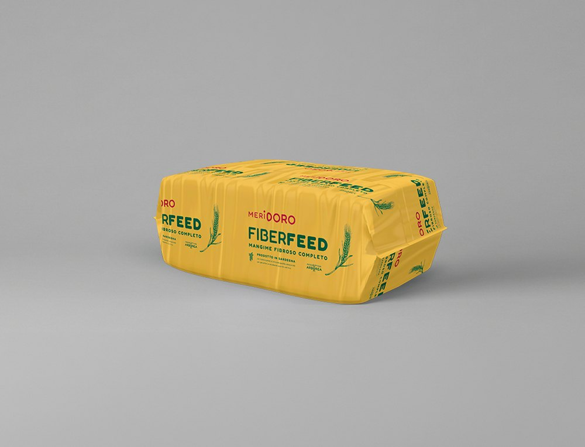
Da 20, 22, 24 o 25 kg a seconda del prodotto.
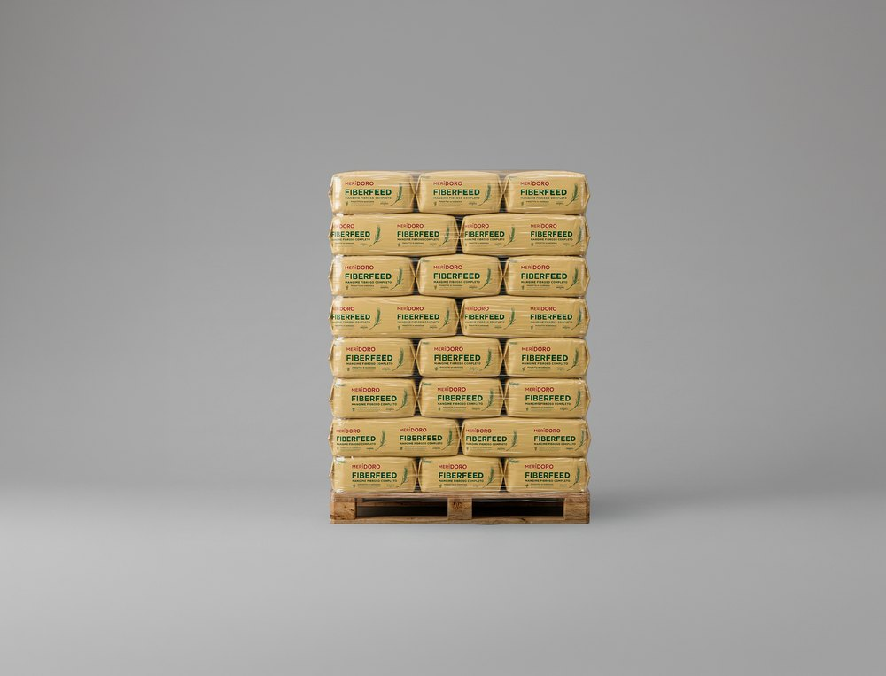
Da 40 o 45 pezzi, fra 8 e 11,25 q.li.
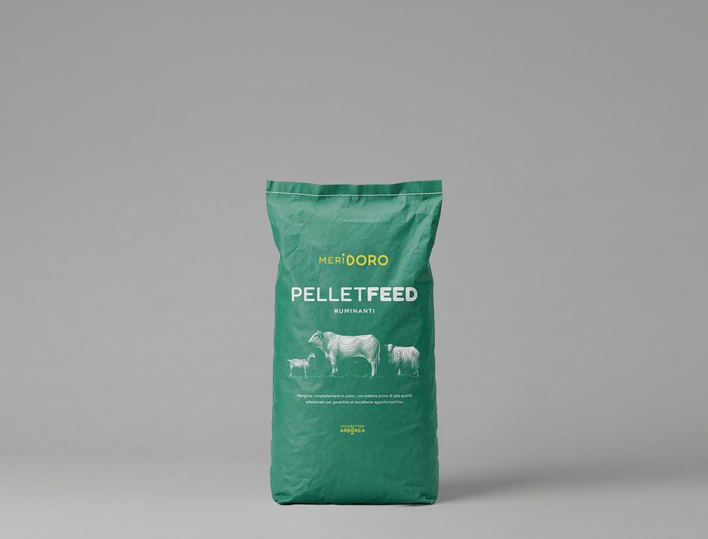
Da 25 kg, pedane da 42 sacchetti – 10,5 q.li.
Da 250 a 660 kg circa, secondo la formulazione.
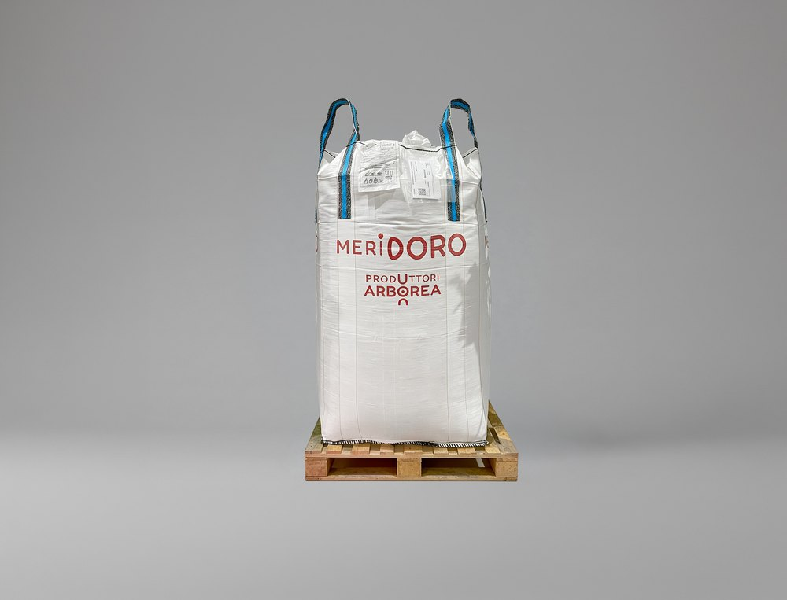
Da 500 kg per la linea biologica, 6 q.li per le miscele bio.
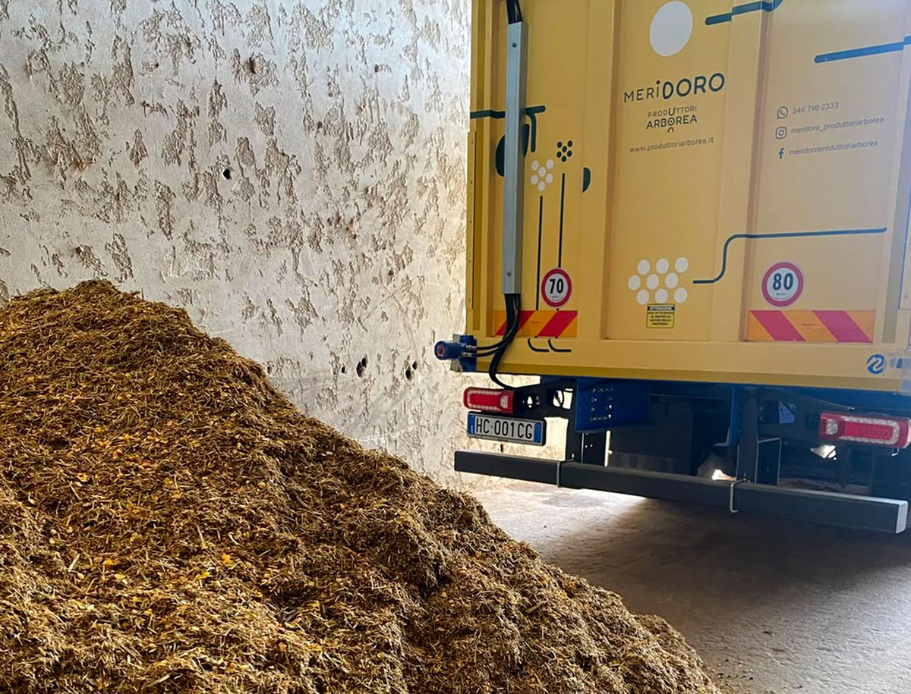
Su prenotazione, ordine minimo 45 q.li.
Le immagini dei formati sono i mockup ufficiali del packaging Meridoro. Denominazioni, valori nutrizionali, ingredienti, formati e dosi sono trascritti dai cataloghi Meridoro Bovini, Ovini, Caprini, Equini e Biologico. I valori sono espressi sul tal quale (Tq); dove il catalogo riporta anche la sostanza secca, il valore compare come «Ss».
La Produttori Arborea mette a disposizione di attuali e futuri clienti un tecnico per svolgere l’attività di consulenza necessaria a utilizzare al meglio i prodotti.
Il nostro tecnico valuterà, in base alle esigenze aziendali, la possibilità di studiare una razione personalizzata per l’allevamento. Il servizio è gratuito e compreso nell’acquisto dei nostri mangimi.
Parla con un tecnicoLa rete di punti vendita agro-zootecnici è il collegamento diretto tra i nostri prodotti e chi opera nel settore agricolo e zootecnico.
Puoi rivolgerti al nostro ufficio commerciale per ordinare e avere maggiori informazioni.
0783 1818087 ·
Whatsapp 346 7902333
mangimificio@produttoriarborea.it
Stabilimento mangimistico — Via Ercole Cellino, Porto Industriale, 09096 Santa Giusta (OR)